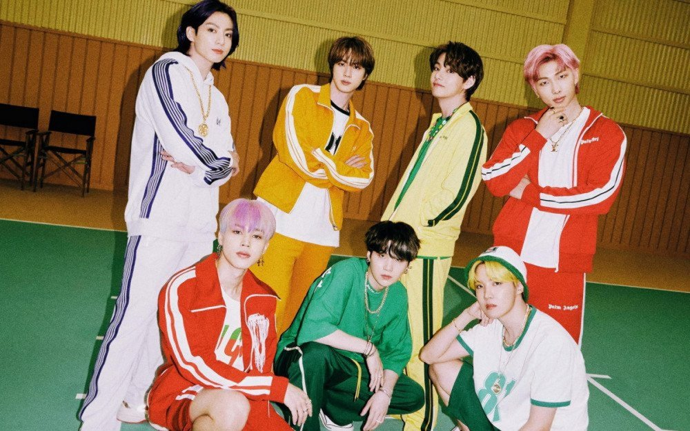

활동
데뷔이전
빅히트 엔터테인먼트의 대표이자 프로듀서인 방시혁은 2010년 9월 2일, 힙합 그룹 방탄소년단의 새 멤버를 모집하는 전국 오디션을 개최한다고 밝혔다.
이 오디션은 포털사이트 다음과 함께 ‘힛잇(HIT IT)’이라는 타이틀로 진행되었다.
이미 방탄소년단의 멤버로 발탁된 김남준에 대해 방시혁은 “언더 힙합신에서도 실력을 인정받은 고등학생 래퍼로 랩 메이킹에 탁월하며 프로 못지 않은 실력을 지니고 있다”고 소개했다.
연습생 시절에는 임정희와 2AM 등의 회사 선배 가수들의 앨범에 참여하기도 했고, 빅히트와 쏘스뮤직의 합작 걸그룹이었던 글램의 백댄서로 활동하기도 했다.
방시혁의 진두지휘 아래 리더 RM을 중심으로 랩, 보컬, 춤에 능한 진, 슈가, 제이홉, 지민, 뷔, 정국 총 7명의 최종 멤버가 발탁되었고, 3년간의 연습시간을 보내며 힙합 아이돌 그룹으로 데뷔 준비를 마쳤다2019년
2월 25일에는 아미피디아 (ARMYPEDIA) 'ARMY들이 만드는 BTS의 기억저장소'가 큐알코드를 포함한 사진이 전세계에 공개되며 시작되었다. 이어서 3월 방탄소년단은 스타드 드 프랑스, 메트라이프 스타디움, 로즈볼 등 여러 경기장에서 만남을 갖는 러브 유어셀프 투어를 발표했다. 모든 날짜는 2시간도 안 돼 매진되었다.[263] 2019년 4월 12일, 방탄소년단은 여섯 번째 미니 음반 《MAP OF THE SOUL : PERSONA》를 발매했다. 타이틀곡 "작은 것들을 위한 시 (Boy With Luv)"는 부제 "Boy With Luv"에서 알 수 있듯이 2014년 2월 발표한 ‘상남자 (Boy In Luv)'와 맞닿아있다. ‘상남자'가 어린 시절의 치기 어린 사랑을 이야기했다면, "작은 것들을 위한 시 (Boy With Luv)"는 사소한 일상과 행복을 알아가는 작은 것들에 즐거움을 느끼며, 그것을 지키는 것이 진짜 사랑이고, 진짜 힘이라는 내용이다. 세계의 평화, 거대한 질서 등이 아닌, ‘너에 대한 관심과 사랑, 작고 소박한 사랑의 즐거움'을 노래한다. 특히, 세계적인 가수 ‘할시(Halsey)'가 피처링으로 참여해 사랑의 기쁨과 즐거움에서 오는 설렘의 감정을 다채롭게 표현했으며, 멤버들의 표정과 연기를 많이 볼 수 있도록 퍼포먼스를 구성했다. 다음 날인 4월 13일, 미국 NBC 심야 코미디쇼 《새터데이 나이트 라이브》에서 생방송으로 컴백 무대를 선보였다. 그리고 한국가수 최초로 빌보드 200차트에서 3번 연속 1위를 하였다. 또한 미국의 유명 시상식인 빌보드 뮤직 어워드에서 한국 가수 최초로 2관왕을 하였다. 또한 《MAP OF THE SOUL : PERSONA》의 판매량은 300만장을 넘었다.
월드투어 《LOVE YOURSELF: SPEAK YOURSELF》 유럽투어에서는 6월 1~2일, 한국 가수 최초로 영국 웸블리 스타디움에서 단독 콘서트[264]를 열었다. 또한 비(非) 영어권 가수로는 이례적으로 2회의 공연에서 총 12만 좌석의 티켓을 판매하였으며, 판매 시작과 동시에 매진되었다. 이어 10월 방탄소년단은 해외 가수 최초로 사우디아라비아에서 단독 스타디움 콘서트를 열었다.[265]
10월 18일,《MAP OF THE SOUL : PERSONA》의 수록곡 Make it right의 리메이크 버전이라고 할 수 있는 Make it right(feat. Lauv)에서는 해외가수 Lauv가 참여해 영어와 한국어로 부른 노래를 한 곡에 담았다. 10월 26일~10월 29일 동안 한국에서 총 3번의 《SPEAK YOURSELF : THE FINAL》콘서트를 진행하였다. 또한 여러 연말 시상식에서 대상을 수상하였다.
2020년
8월 21일, 방탄소년단은 디지털 싱글 〈Dynamite〉를 공개하였다. 8월 31일,〈Dynamite〉가 한국인 가수 중 최초로 빌보드 핫 100 차트, 빌보드 200 1위에 올랐다.[266] 10월 13일, 방탄소년단이 참여한 Savage Love의 리믹스 버전도 빌보드 핫100 차트 1위에 올랐다. 11월 20일, 방탄소년단은 스페셜 음반 《BE》를 발매하였다. 타이틀 곡인 도 〈Dynamite〉와 함께 빌보드 차트 1위에 올랐다. 멤버 슈가는 연습생 시절 다친 어깨로 인해 최근 수술을 받게 되어 이번 앨범의 활동은 대부분 쉬게 되었다. 방탄소년단은 BE 발매 기념 브이라이브 에서 슈가의 회복소식을 전했다.
2021년
12월 10일, 미국 스케줄을 끝 마치고 두번째 장기휴가를 받아 휴식기에 들어갔다.